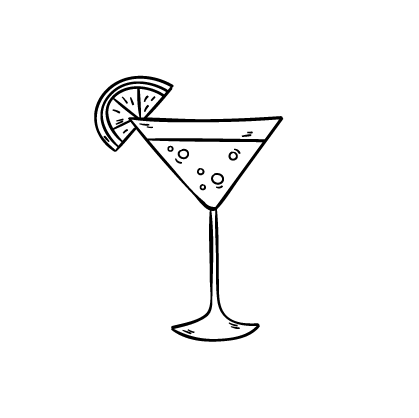
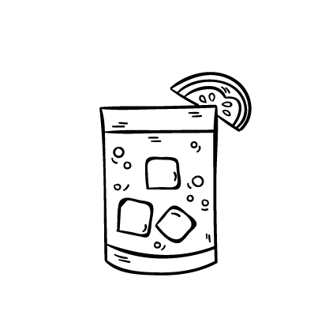

cocktails

Ingredientes
Preparación
Agregar los ingredientes en un vaso corto con hielo en cubo. Remover suavemente y decorar con rodaja o piel de naranja.
Ingredientes
Preparación
Completar una copa con hielo hasta enfriarla y eliminar el exceso de líquido. Incorporar los ingredientes y revolver.

Ingredientes
Preparación
Agregar los ingredientes en un vaso corto con hielo en cubo. Remover suavemente y decorar con rodela o piel de naranja.